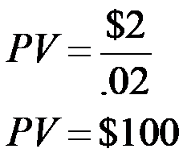
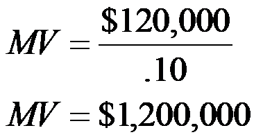
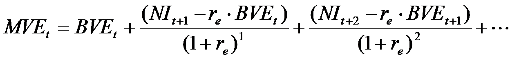
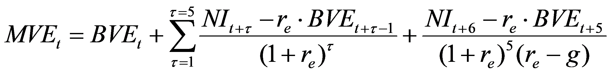
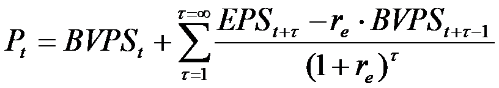

Source acknowledgements 1
Introduction
Like Cholesterol, growth comes in two forms, good (sustainable, risky) growth, and bad (unsustainable, risky) growth. Without risk, there is no reward, but some growth-related risks will increase the risk of misstatement, and these risks are the ones we need to understand.
“Value is a function of risk and return”
In this case, we will discuss the audit risks associated with auditing a growth company. We will continue to focus on companies within the retail industry; but we will switch our attention to smaller companies who have achieved high revenue growth in recent years. This case covers four interrelated topics. First, from a financial statement analysis perspective: (i) forecasting expectations; and (ii) challenges with valuing growth companies. From an audit perspective: (iii) auditing estimates associated with growth firms; and (iv) how revenue-related accruals affect the audit planning process.
This document provides the necessary background for forecasting and valuing companies, which we will apply to your selected growth companies.
Background
All firms take risks to generate a return on investment. Figure 1 outlines the trade-off between risk-taking and creating value. As we begin to explore the audit risks related to growth firms, we want to keep this image in mind. Essentially, the theory behind Figure 1 suggests that grow from risk-taking (launching a new product, opening new stores, offering new services) is beneficial to the company up to a point. After which, the risk-taking outweighs the benefits to the company, lowering value.
Figure 1
Optimal Risk-Taking
Notes: This figure is taken from “Risk Assessment in Practice” by Deloitte.
As these risks are tied very closely to growth, the distinction between optimal risk-taking and excessive risk-taking will be difficult to judge for high-growth firms (including recent IPOs). Some questions to keep in mind and develop include: is the company taking excessive risks? How do we measure excessive? Are there sufficient controls in place over the estimates of various revenue-related estimates (including contra-revenue accounts for returns)? How is growth affecting inventory systems, or quality controls? And perhaps most fundamentally, from a financial reporting perspective, what are the accounts that are most tied to revenue? And are controls over these estimates being sufficiently monitored and updated as necessary?
AS 2501 “Auditing Estimates” defines an accounting estimate as “an approximation of a financial statement element, item, or account” and are estimates because either:
“a. The measurement of some amounts or the valuation of some accounts is uncertain, pending the outcome of future events.
b. Relevant data concerning events that have already occurred cannot be accumulated on a timely, cost-effective basis.”
Revenue which is an accounting estimate as it is generally reported as net revenue, as it is net of reserves. For growth firms, revenue and the related reserves are an important account that represents a misstatement risk. Usually, when the company sells goods with a right to return, or I the case of software services that include updating rights. With revenue recognition undergoing changes due to the FASB’s passing of Section 606 into the codification, revenue recognition is becoming more complex for firms that have contracts with customers. The recent PCAOB Staff Audit Practice Alert No. 15 (SAPA 15), provides details about important audit matters for revenue recognition under ASC 606.
The economics of growth firms, can make the audit planning process more challenging, as growth companies are more challenging to understand (they could be in new markets, advancing new technologies, or disrupting familiar industries). To understand these firms, we will work through the forecasting and valuation processes and discuss what makes the application of these standard financial statement analysis tools more challenging for growth companies.
Forecasting
Every financial statement forecast begins with a sales estimate. Typically, the sales estimate is then combined with margin forecasts to estimate future income, and combined with turnover forecasts to estimate future assets, but the entire process relies on the sales forecast.
At a high-level, there are two sources of sales growth: (1) changes in the number of sales-generating units (e.g. attracting/losing customers, and changes in the frequency of customer purchases) and (2) changes in the rate of sales per unit (e.g. changes in the price the company can charge). We will start by defining sales growth in percentages as:
(1)
Note that all the terms are in percentages, and the units are common across both terms. The percentages can be considered as year-over-year growth rates. As it is based on unit-specific inputs, it is often referred to as a bottom-up forecast. An example could be the sales growth in revenue generated by the iPhone for Apple, in which case, is the percentage growth in the number of iPhones sold and is the amount of revenue that Apple recognizes from each iPhone sale.
Equation (1) can be written for a forecast of sales, in dollars, based on the difference between the expected outcome and the historical revenue. For example:
(2)
Where the subscript t refers to the most recent historical information. Writing sales growth in this way reminds us that it is relative to last year’s actual outcomes. The simple point here is that the easier it is to expect how many customers are going to purchase a good or service from the firm relative to last year, the easier it is to forecast sales growth rates accurately. Data analysis provides some insight into what to expect:
Figure 2
Evidence of Mean-Reversion in Sales Growth

Notes: This figure is based on Nissim and Penman (2001). Each line represents the average sales growth rate for a portfolio of firms. Each of the 10 portfolios are formed in year 1 based on the level of sales growth. The top group represents the top 10% of firms ranked on sales growth in year 1, and the bottom line represents the bottom 10% of firms ranked on sales growth in year 1. Over the subsequent five years, the differences between the portfolios narrows, with all portfolios moving closer to the mean; we label this regularity as “mean-reversion.”
What the data says: Successful high-growth companies can have extremely high growth rates in their early years due to the small number denominators (i.e., a small number of customers in the early years). As a company matures, however, sales growth rates have a strong tendency to mean-revert. The movement of all portfolios of growth firms towards the mean, over the five-year period is evidence of mean-reversion for the sample of large sample of publicly traded firms considered in the study. It is a robust pattern, and confirms that the theory of competition (which implies that firms cannot sustain abnormally high growth rates as they will attract competitors) is seen in the data.
As mentioned earlier, sales forecasts create the basis for other forecasts. Sales forecasts are naturally tied to the operations of the firm as part of the budgeting process. Managers will use their expected sales to consider the required scale of operations needed to meet the expected sales demand. For example, the company will estimate production plans that will include inventory levels and capital expenditures. If these demand forecasts end up being too high, there are risks of overproduction and returns. If there is an unexpected adverse demand shock level of overproduction and returns, accounting estimates can be affected (return provisions are set too low, inventory is overpriced).
The simplest way to generate forecasts of sales-related accounts is to start with historical ratios of each account divided by sales. Which is often implemented by the calculation of common-size financial statements where all sales-related accounts are divided by sales. A natural example is the ratio of cost-of-goods sold to sales. As we know from bookkeeping, when the accounting system records a sale, it will also record the cost of goods sold related to that sale. As such, cost of goods sold is naturally tied to sales.
The main challenges relating to these forecasts for growth firms arises as the historical relations between sales and the expense item is not a good predictor of the future. For example, cost of sales might be relatively low for a company that is growing strongly when they are the only player (or a disruptor) in the industry, being able to charge high premiums, but these margins may compress and lead to higher cost of sales as more competitors enter the industry or adapt to the disruption.
Consider Netflix: Netflix is a subscription service and their revenues can be considered most simply as a function of the number of subscribers they are able to retain and acquire times the subscription fee they are able to charge. This makes forecasting their sales growth a relatively simple task, as we do not have to consider multiple different sales generating units, just one – the subscriber. Thus, for Netflix as a company we can rewrite Equation (1) as :
:
%Sales Growth=(1+%growth in #subscribers)×(1+%growth in revenue/subscriber)
When Netflix was a young high growth company, they were increasing subscribers at a much faster rate than they do these days as the base number of subscribers was lower. If we made the mistake and assumed that Netflix could grow subscribers at a constant rate from these early years, we’d have assumed that Netflix would have more subscribers than the US population by 2017, whereas by April 2017, they had about 100 Million subscriptions, as the growth rates naturally slow down as most individuals who know about Netflix have likely made their decision on whether to subscribe or not.
Think about what are the key accounts that will be affected by revenue? How does Netflix measure their cost of sales? How is this cost changing over time? How has the change Netflix’s cost structure (from a third party to a producer of shows) affected the estimation of cost of sales? What controls are in place to review the way in which these costs are measured and written to cost of sales?
Growth Strategies and Accounting
As we explore the risks associated with growth firms, we need to pause and consider how a company is growing. Companies can grow operations “organically” through undertaking research and development activities and through acquisition. Historically, R&D predicts future sales and is perceived favorably by the market, resulting in high abnormal market returns (Louis et al. 2001).2 Conversely, historical evidence suggests firms who grow operations through acquisition tend to do poorly, both in terms of operating performance and stock market performance (Loughran and Vijh 1997). Two well-known features of accounting measurement are of interest to us – R&D is typically expensed when incurred, and acquisitions give rise to the recognition of goodwill as the difference between the purchase price and the net realizable value of the acquired assets. Understanding R&D and acquisition accounting are central to the forecasting process, as investments made today are expected to generate payoffs in the future, but begs the question as to how long in the future…? And what are the risks associated with each growth strategy…?
Valuing Companies
In the ongoing search for bargains in the stock market, analysts and investors rely on models to estimate the intrinsic value of a firm’s shareholders’ equity. By comparing the valuation suggested by their model to the actual value in the marketplace, they form opinions as to whether a given stock is under or overvalued. Valuation models are also used by investment bankers as an aid to pricing initial public offerings, and to inform parties involved in assorted private transactions such as selling a business or division, dividing property among owners, and settling estates. In this section, we introduce a relatively simple but powerful model of equity (common stock) valuation.3
Should valuation be based on future cash flows, future dividends or future earnings? Modeling a company’s stock price requires predictions of the future. Valuation models are typically based on discounted future cash flows, discounted future dividends, or discounted (residual) earnings.4 The benefits of using accounting inputs, especially residual earnings models are:
Benchmarks for quarterly and annual performance are almost always given in earnings per share (EPS) – not in cash flows or dividends. Earnings generally receive far more attention from the business press, investors and analysts. Analysts typically forecast earnings as the value driver (rather than cash flows or dividends), and their earnings forecasts are often readily available data sources.5
Analysts’ forecasting horizons are finite (generally 5 years or less). Many firms do not pay dividends and others have dividend payout policies that tend to be stable for long periods. Thus valuation models based on dividends tend to be less useful for modeling equity values.
Evidence from academic research suggests that analysts and investors tend to rely on earnings to assess performance (more so than cash flows or dividends).
Evidence from academic research suggests that residual-income valuation models tend to be more accurate than cash flow or dividend-based models.
Frankel and Lee (1998) provide evidence that the ratio of the residual-income valuation model to price predicts future returns (that is, the model appears to be able to identify mispriced stock).
The basics of equity valuation
A simple perpetuity valuation model: We start with a highly simplified model that assumes earnings, cash flows and dividends are equivalent and that earnings continue at the same amount each period in perpetuity.6 Using this perpetuity model, the present value (PV) of a stream of future earnings is:
(3)
where, NI = earnings assumed to continue in perpetuity, and r = discount rate. Below we consider three simple applications of this so-called perpetuity valuation model.
Example 1: A savings account. Assume we put $100 into a savings account that has an expected annual return of 2%. What is expected earnings for next year? The answer is $2 (= 0.02 * $100). Now let’s use our perpetuity valuation model to arrive at the present value of our savings account assuming it would continue to pay 2% interest each period into the future and that all earnings are always paid out in cash. (Note that we are using ‘market value’ and ‘present value’ as synonyms.) If our model works, we know the answer should be $100 since this is the initial amount we invested in the savings account. Applying our perpetuity valuation model above, the present (or market) value should be our annual earnings divided by the discount rate, our expected annual interest rate:

Our model ‘worked’ in that it yielded the known present value of our investment, $100.
Example 2: Claude’s Coffeehouse. Assume that Claude’s Coffeehouse expects to earn $120,000 next year – and on into perpetuity. Assume a discount rate or ‘cost of capital’ of 10%, we can again use our perpetuity valuation model to estimate the current market value of the company’s stock.

Our model suggests that Claude’s Coffeehouse is worth $1.2 million.
Example 3: Starbucks. According to the consensus analyst estimate provided by Yahoo Finance in early September 2011, Starbucks (SBUX) is expected to earn $1.82 per share in the fiscal year ended September 30, 2012. (We discuss where these numbers come from later.) Assuming a discount rate or ‘cost of equity capital’ of 7%, we again apply our perpetuity valuation model to estimate the current market price of Starbucks’ common stock. (Here, we express the present market value as the price per share, P.)
P = $1.82/0.07
P = $26.00
Our model suggests that Starbucks shares are each worth $26. However, Starbucks’ stock price in early September 2011 was approximately $38, which is $12 or over 45% higher than our perpetuity model predicted. Why was the estimate so low relative to the price? The answer is due to expected growth.
A general model for equity valuation: Next, we introduce our general model to estimate the total market value of a firm’s equity (a.k.a. its ‘market cap’). This model improves on the perpetuity model by allowing for growth in earnings and introducing the wealth-building concept of ‘abnormal’ versus ‘normal’ earnings. The estimated intrinsic market value of a firm’s equity at time t (MVEt) is:7
(4)
where = the book value of equity at time t, = forecasted earnings for time t+1 and beyond, and = the cost of equity capital (which is assumed constant over time).
Whereas this model may look daunting, it is quite intuitive (really, it is!). Below we discuss how the model is built, the inputs needed to make it work and where you can find the data on the Internet to build your own estimate of the value of a company.
Residual income valuation models: theory
At the simplest level, when a firm earns a ‘normal’ economic return on the shareholders’ investment (re), the firm’s total market capitalization (MVEt) should be approximately equal to its accounting book value of equity (BVEt), i.e., MVEt = BVEt. Book value of equity is the amount contributed by the owners over time, plus the cumulative amount earned by the company, less any dividend payments to the owners.
Shareholders hire professional managers to do better than earn normal returns – their goal is to build (some would say maximize) shareholder value. If they are successful, the company earns more on shareholders’ capital than the capital costs, i.e., the company beats the benchmark return (re). As the stock market is forward looking, when success is expected, market values exceed accounting book values, i.e., MVEt exceeds BVEt. To model the size of this market-to-book premium (if any), we evaluate each future period and compare the expected earnings (NIt+1) to the minimum earnings required by investors to meet the cost of equity capital target (re times BVEt). This period-by-period difference (NIt+1 - re times BVEt) is often called ‘abnormal’ earnings.8 If a company’s prospects are poor, forecasts of future earnings may even be less than the required cost of equity capital. In this case, abnormal earnings are negative – shareholder value is being destroyed. Either way, the market value of owners’ equity is a function of the magnitude of abnormal earnings, i.e., MVE is equal to the beginning BVE plus the present value of future abnormal earnings. In mathematical terms, our model to estimate the intrinsic current market value of equity looks like:
and so on in perpetuity
However, we cannot simply add these future values to the current book value of equity. We need to consider the time value of money and discount each future flow back to its present value,9 yielding the somewhat more complicated looking model:

and so on in perpetuityFinally, we recognize that we cannot forecast forever, and so we will choose a “forecast horizon” – or period over which we will forecast net income explicitly – and we use a perpetuity to approximate and additional value after our forecast horizon. Using the shorthand of the summation sign to group all of the abnormal earnings terms together for the first five years, including a perpetuity of residual income – replicating model (1) above.

(5)
The first term on the right-hand side, the book value of equity, is known and publicly available. The second term represents the value of the first five years of forecasted data, the present value of future abnormal earnings within this forecast horizon. The third term is the estimate of the present value of all future cash flows which occur from the sixth year in the future into the infinite future. Note that NI at t+6 can be calculated using the growth rate g in the perpetuity (1+g) time NI at t+5. All of the model’s complexity is in estimating these last two terms.
We now turn our attention to understanding each of the inputs necessary to put this valuation model into practice.
Residual income valuation models: implementation
From model in Equation (2), it appears that we only need to know four items to estimate a firm’s current market cap: current and future book value of equity (BVEt and BVEt+τ), future earnings (NIt+τ) and return on equity (re), which we assume remains constant over time. Unfortunately, it is not quite that simple. We are dealing with an uncertain future and we need to make some strong assumptions and perhaps rely on expert analysts to help us in our valuation. In this section, we define the four main inputs to the valuation model and revisit why each is included.
Current data: this is the first term on the right-hand side of model (2)
Current book value of equity (BVEt). Book value of equity is our starting point. It is the only known item in our model – the remaining items are forecasts. If a firm only earns a ‘normal’ return on its equity, investors should be only willing to pay for its book value of equity, i.e., the firm’s market cap should (approximately) equal its book value of equity.10
Future data: the second term on the right-hand side of model (2) estimates the future value of abnormal earnings. The inputs are:
Forecasts of earnings (NI or earnings per share, eps). The essence of our forward-looking model relies on professional analysts’ forecasts of future earnings.11 Analysts typically forecast NI for perhaps a year or so into the future, but fortunately, analysts also forecast a long-term growth rate in earnings. We use this long-term growth rate (LTG) to estimate NI approximately 5 (or more) years into the future.12 We generally use the average or consensus forecast obtainable from many sources (including the Internet as described below). Of course, you can easily modify analyst estimates – especially if you believe you have superior information.
Future book value of equity (BVEt+τ). Future book value of equity is needed to create our benchmark for a ‘normal’ expected return. If a firm can earn more than the normal rate of return on the shareholders’ investment, then investors should be willing to pay more than the book value of the firm’s equity. In this situation, managers are taking actions that add value for shareholders. In contrast, when the firm is earning less than its cost of equity capital, managers are taking actions that destroy value and the shareholders’ investment should be less than the book value of the firm’s equity. Since both earnings and dividends affect how much capital is retained in the company, we must adjust the prior period’s book value of equity by adding this period’s earnings and subtracting this period’s dividends (DIV), if any.
Cost of equity capital (re). Estimating the cost of equity capital is a major (and difficult) topic in finance. For our purposes, we will either a) take the rate as given and assume it remains constant over time, or a well-established model such as the capital asset pricing model (CAPM) developed by the Nobel Laureate William Sharpe when he was at UW in the 1960s.13
Why doesn’t the value estimate equal price?
For publicly traded companies, we can compare our estimate to the actual stock price (or market cap). Allowing us to assess how well our model did.
In general, differences between the actual market price and our estimate can be attributed to several possible factors:
Our model’s assumptions differ from the consensus assumptions implicit in the market price. Again, what assumptions appear to be most important in driving our estimate of Starbucks’ stock price?
Our model may not include all the effects of hard-to-measure intangibles such as quality of management and product pipeline. While analysts no doubt attempt to factor in these intangibles in their earnings forecasts, it is likely to have error.
Of course, the market’s price could be temporarily “inefficient” or “irrational,” e.g., based on old or non-economic factors see Curtis (2012).
Our model is based on analysts’ view of the future at a point in time, but market prices change with new information. Whereas the model cannot anticipate unexpected news, it will react to news as analysts and investors revise their forecasts of future earnings to incorporate new assumptions. This is a continuous process with occasional shocks driven by especially large events such as an offer to purchase the company, a CEO transition or a major product announcement.
The main challenges relating to the valuation of growth firms arises as the bulk of the valuation is going to be coming from longer-term future earnings. That is because many growth firms are expected to incur higher costs as they are innovating and are expected to come up with more efficient cost structures in the future. That is, growth is often achieved at the cost of profitability. This central issue is even more apparent when we consider a growth company that is making a loss. Under their current cost structure, the firm generates a negative margin on each dollar of sale, which means that growing revenues under the current cost structure could simply increase the size of the loss, destroying value. If the company is expected to have large fixed costs then as the firm reaches economies of scale, they will potentially become profitable. In other cases, though, if a company cannot reach a point where they achieve economies of scale, or their variable costs increase offsets any gains from increasing production then these companies may never make a profit.
References
Curtis, A. 2012. A Fundamental-Analysis-Based Test for Speculative Prices. Accounting Review 87 (1):121-148.
Curtis, A., S. E. McVay, and S. Toynbee. 2017. The Changing Implications of Research and Development Expenditures for Future Profitability. University of Washington working paper.
Frankel, R., and C. M. C. Lee. 1998. Accounting valuation, market expectation, and cross-sectional stock returns. Journal of Accounting and Economics 25 (3):283-319.
Loughran, T. I. M., and A. M. Vijh. 1997. Do Long-Term Shareholders Benefit From Corporate Acquisitions? The Journal of Finance 52 (5):1765-1790.
Louis, K. C. C., J. Lakonishok, and T. Sougiannis. 2001. The Stock Market Valuation of Research and Development Expenditures. The Journal of Finance 56 (6):2431-2456.
Nissim, D., and S. H. Penman. 2001. Ratio Analysis and Equity Valuation: From Research to Practice. Review of Accounting Studies 6 (1):109-154.
Endnotes
Acknowledgements: This case was prepared by Asher Curtis in the Autumn of 2017.
↩Recent research by Curtis et al. (2017) suggests that the value of R&D investments are declining over time due to increased competition, and many of the earlier evidence on the link between R&D and future profitability are no longer valid. See also the Wall Street Journal article “The Economy’s Hidden Problem: We’re Out of Big Ideas.”
↩One can value a company’s total assets or its owners’ equity. We choose to value owners’ equity as the resulting estimate can be compared to observed stock prices.
↩Keep in mind that, holding underlying assumptions constant, all valuation models should yield the same result over a long horizon.
↩For example, see http://finance.yahoo.com. One exception was the Internet sector, especially before April 2000, where revenues and non-financial metrics such as ‘website hits’ arguably received more attention from analysts than did earnings, likely because earnings were negative.
↩The British government has issued debt securities that look like this. They are called perpetuities and, while they provide fixed payments into perpetuity, the government is not required to repay the principal.
↩Alternatively, the price per share (P) can be modeled as a function of the book value of equity per share (BVPS) and earnings per share (EPS) as follows:

.This per share version of the model is described in the Appendix. We tend to use per share versions of the model to estimate the value of a real world companies because most analyst data is provided on a per share basis.
↩It is also referred to as residual income. Stern Stewart, a large international consulting firm, has introduced and trademarked its custom version of residual earnings called economic value added or EVA®. See www.sternstewart.com for details.
↩We discount at (1+r) because we discount each individual flow. Perpetuity models such as those illustrated in the perpetuity examples discount by a constant r because each flow is assumed to be equal and continue in perpetuity.
↩Technically, this is true when the book equals the market value of the existing assets “in exchange” which is often more than the book-value given historical cost (in a fire-sale this could be less than their book-value).
↩In practice, analysts generally forecast earnings per share (EPS). As indicated above, our model can be written in per share terms. This per share version is discussed in Appendix 1. Later, we will practice using both versions.
↩Some variants of the model assume that company-specific long-term earnings growth reverts to the industry mean after a finite period. When this is the case, the firm’s ROE is often predicted to gradually revert to the industry average. This is sometimes referred to as a ‘fade’ model.
↩We could model the cost of equity capital as a function of the current risk-free rates (Rf), the riskiness of the firm’s stock (BETA), and the normal premium for accepting risk (which we assume is approximately 4%). The relation is re = Rf + BETA Risk Premium. This is the CAPM, which you should recall from your finance courses.
↩